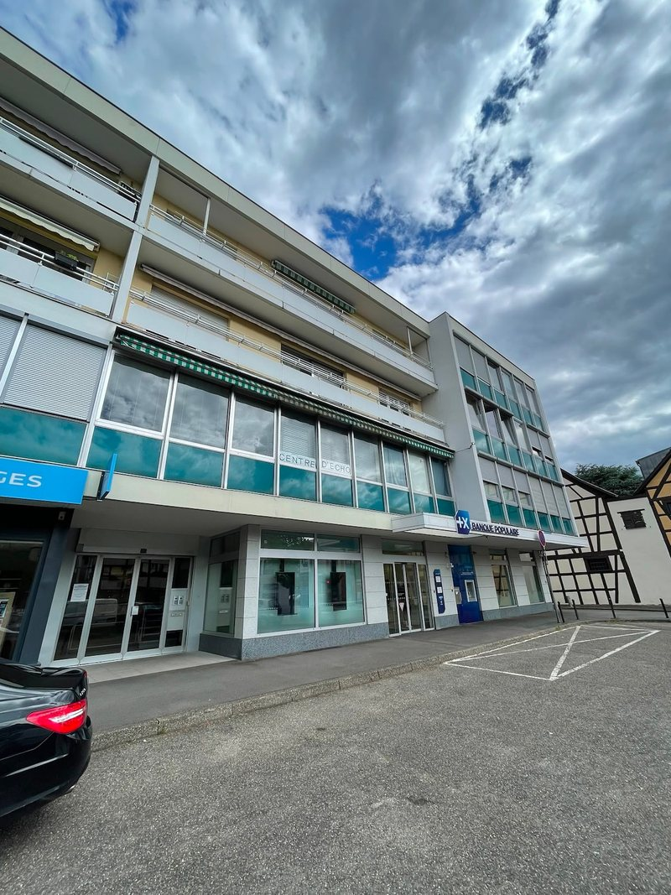
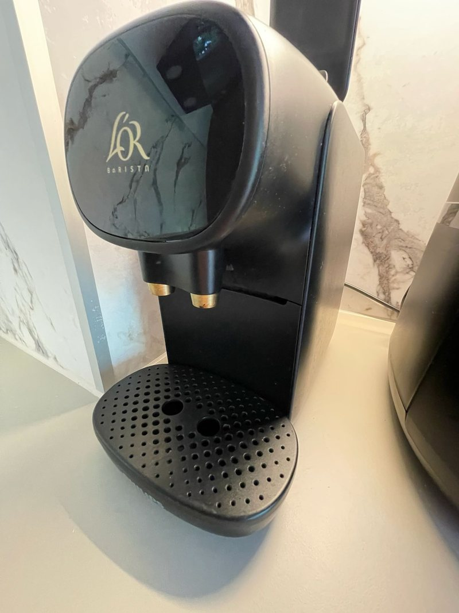
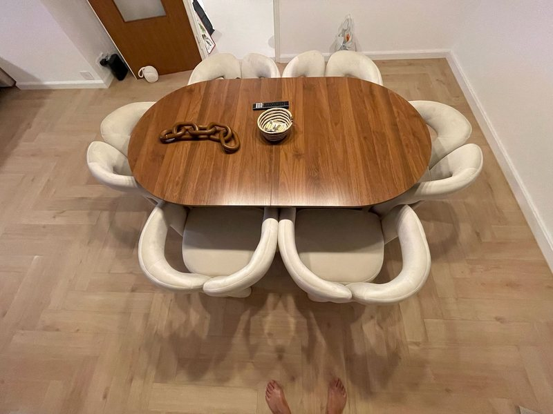
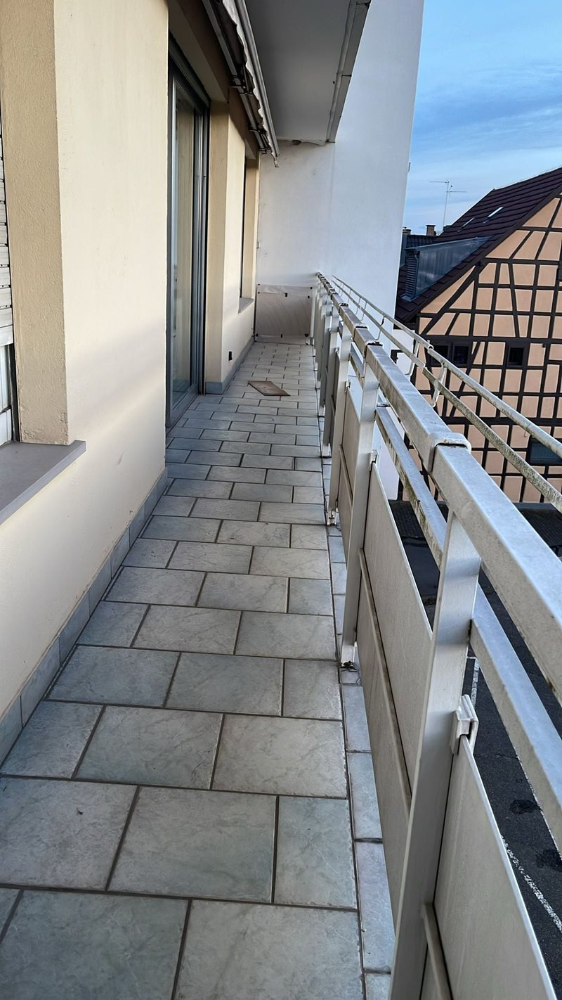
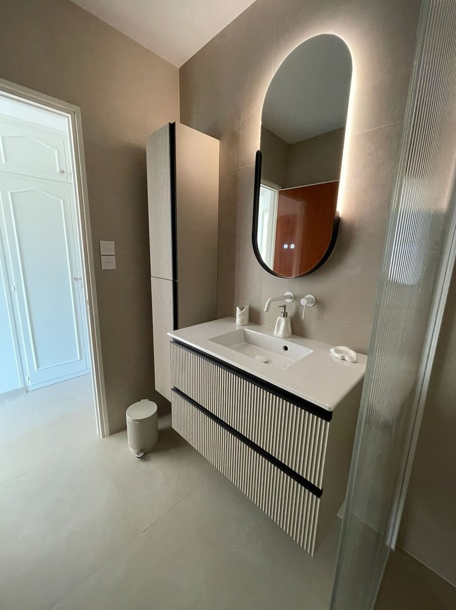
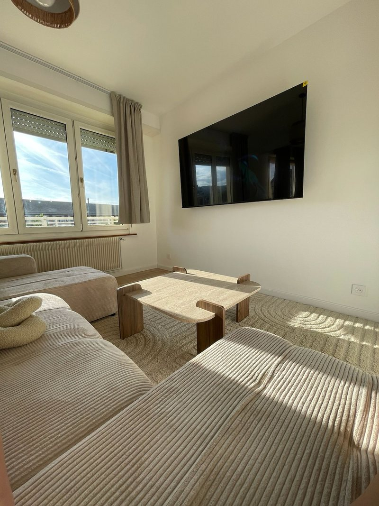
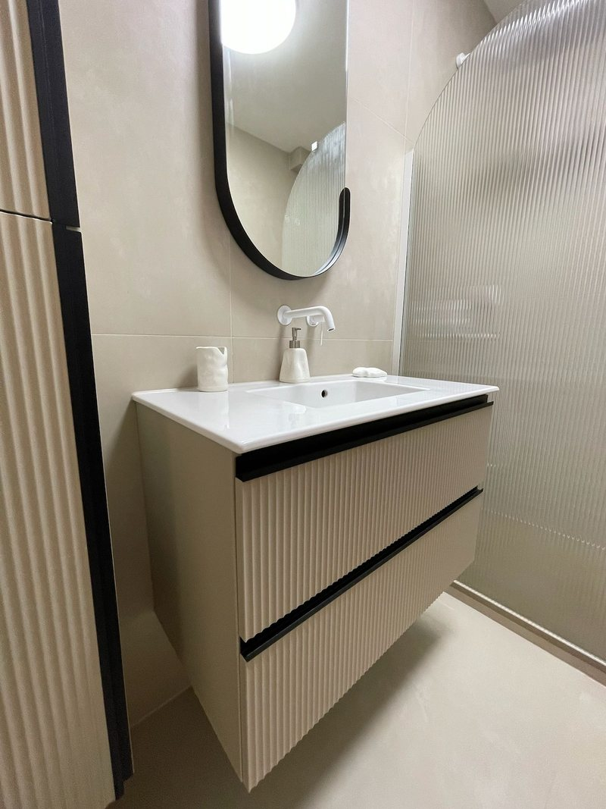
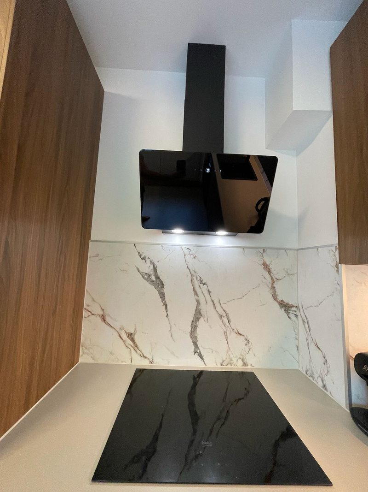

Appartement design · Illkirch-Graffenstaden
Cocon — Illkirch-Graffenstaden
Appartement design de 120 m² à Illkirch-Graffenstaden, au sud de Strasbourg, tramway direct vers le centre-ville.
Le logement, en photos
Photos de l'annonce Airbnb · 12 vues












L'essentiel à savoir
Appartement design de 120 m² à Illkirch-Graffenstaden, au sud de Strasbourg, tramway direct vers le centre-ville.
Illkirch-Graffenstaden, au sud de Strasbourg, tramway direct vers le centre-ville. L'adresse exacte sera communiquée à la réouverture.
Équipements
- 120 m²
- Chambres avec lits queen et simples
- Cuisine équipée, four, micro-ondes
- Balcon
- Wi-Fi
- Lave-linge et sèche-linge
- 2ᵉ étage sans ascenseur
À proximité
- Tramway direct vers Strasbourg
- Centre d'Illkirch à pied
- Places gratuites dans les rues alentours
- Strasbourg à 15 min
Où ça se trouve
Illkirch-Graffenstaden
Illkirch-Graffenstaden, au sud de Strasbourg, tramway direct vers le centre-ville. L'adresse exacte sera communiquée à la réouverture.
Illkirch-Graffenstaden, south of Strasbourg, with a direct tram to the city centre. Exact address will be shared at reopening.
Questions fréquentes
Avant de réserver
Comment se passe l'arrivée ?
Arrivée 100 % autonome : serrure connectée Igloohome ou boîte à clés selon le logement. Les codes, photos et instructions sont envoyés avant l'arrivée.
Le linge est-il fourni ?
Oui : draps et serviettes fournis dans tous nos logements (1 serviette par voyageur).
Quelle est la politique d'annulation ?
Non remboursable moins de 30 jours avant l'arrivée. L'option « annulation prolongée » Airbnb (petit supplément) permet d'annuler gratuitement jusqu'à 24 h avant.
Peut-on fumer ?
Non, tous nos logements sont non-fumeurs à l'intérieur.